说明：离线引擎
20250917最新录制说明
一、背景
实时引擎无法处理的几种业务场景：
（1）结合登陆+交易等多种行为判断风险
（2）风险变异后的离线回捞
离线引擎适用的场景-案例case：
1.商家为了销量、排名、补贴等利益进行的虚假交易，主要的风险表现是频繁操作改价、刷单。因此可通过T+1日统计商户改价次数，当次数和成单量远远高的正常值的进行销量清除或补贴取消进行防控识别。
2.支付的反洗钱识别，主要风险表现是超大额多笔交易。因子可通过T+1日统计商家收入的订单额度和数量，当日单笔额度远远高的正常值且大额订单占比远远高一商家收入平均值则对这些订单进行二次审核。
离线引擎与实时引擎处理逻辑的差异：
规则：用户在同商户上低价订单超过20单-----实时引擎，前20单通过第21单拦截；离线引擎，识别到有超过20单，并将识别到的20单以及超过20以上的订单都进行拦截
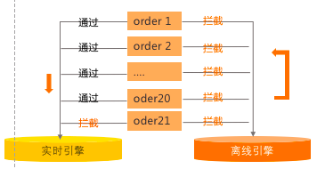
离线引擎与ETL的差别适用情况：
|
适用场景 |
优势 |
劣势 |
|
|---|---|---|---|
|
ETL |
1.数据从来源端经过抽取（extract）、转换（transform）、加载（load）至目的端的过程---ETL 官方文档 2.常见的数据调度处理都可以，包含离线引擎覆盖的场景 |
1.高阶的数据处理能力 2.灵活的调度管理 |
1.可阅读性差 2.在规则管理方面无特征、因子概念，长期无法实现特征沉淀 3.对下游的相关配置无法实现管理，产出hive表即完成 4.在规则中新增加特征逻辑时需要修改多个XT任务 |
|
离线引擎 |
1.能抽象出来规则，且需要规则配置化的场景 ⚠️ （1）一次性的数据清洗、跑数据不建议使用离线引擎 （2）对数据时效性要求高（<Today+1Day）的处理场景不建议使用离线引擎 |
1.可抽象特征和规则并实现配置化管理 2.规则和特征的内容可阅读性强 3.决策下发有统一的管理 4.同实时引擎相似，具备便捷和灵活的规则管理、修改、验证和排查功能 |
1.复杂的、高阶的SQL处理逻辑不适用 |
二、操作说明
1.操作流程概述
2.操作详细流程
已经接入实时引擎的业务方，不需要单独开通离线业务可在当前业务方下即可使用。
使用方式：
01.离线数据接入系统中（数据管理：注册hive表）-->02.绑定数据和场景的关系（离线映射）-->03.创建规则、添加场景配置 就完成了。T+1你将收到执行结果数据
Tips：
（1）目前还不支持实时测试功能，预计2020Q4底可支持
（2）接入离线引擎的hive表中必须有时间字段，包括但不限于datekey、dt，时间格式为yyyyMMdd
Step1:注册hive表和参数
|
操作说明 |
示图 |
|---|---|
|
【入口】 在配置中心-->数据管理 |
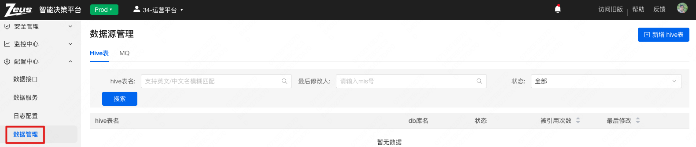 |
|
【添加hive表】 核心配置
hive表依赖配置
dsn怎么写：http://dsn.data.sankuai.com/dsn/v2#/search/blurry 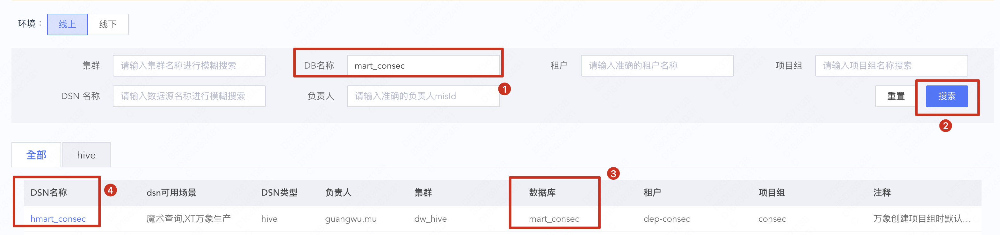 |
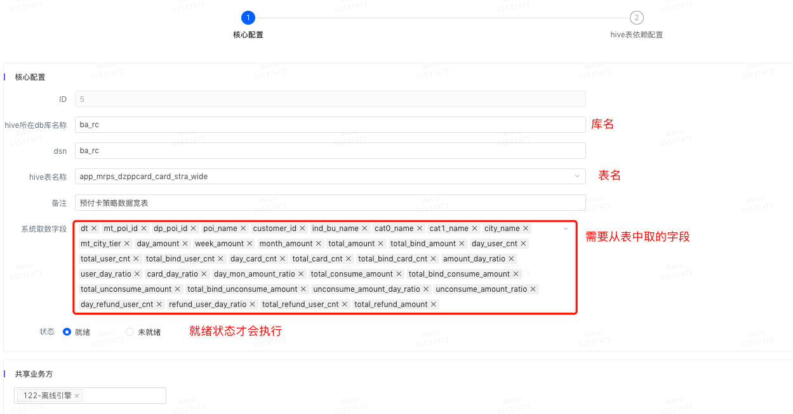 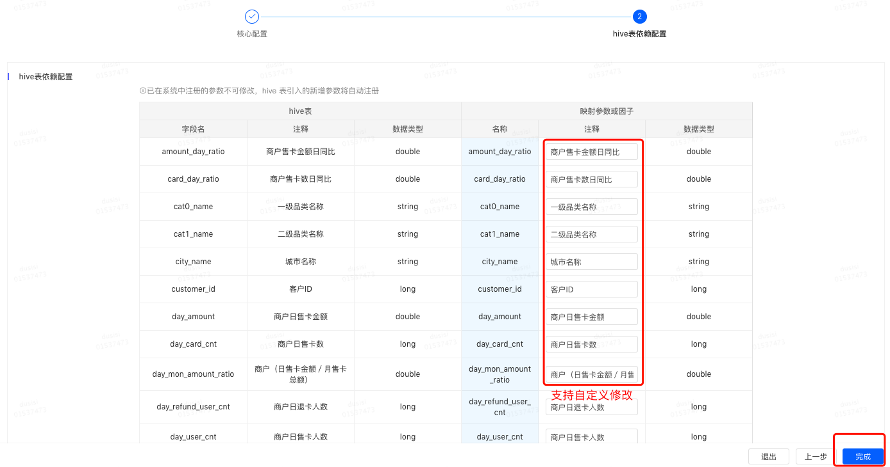 |
Step2:添加离线任务（hive与场景关联）
|
动作 |
说明 |
页面 |
|||||||||
|---|---|---|---|---|---|---|---|---|---|---|---|
|
增删改离线任务 |
入口： zeus-->配置中心-->离线任务-->离线任务详情 列表展示页：区分离线任务详情和调度详情 离线任务详情页：
|
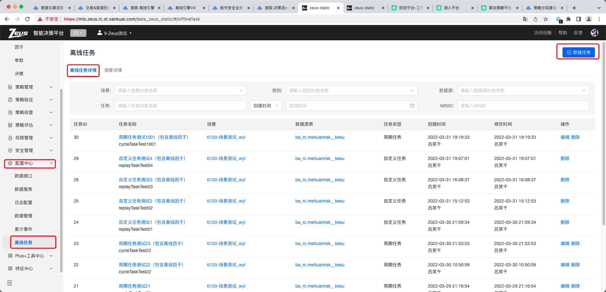 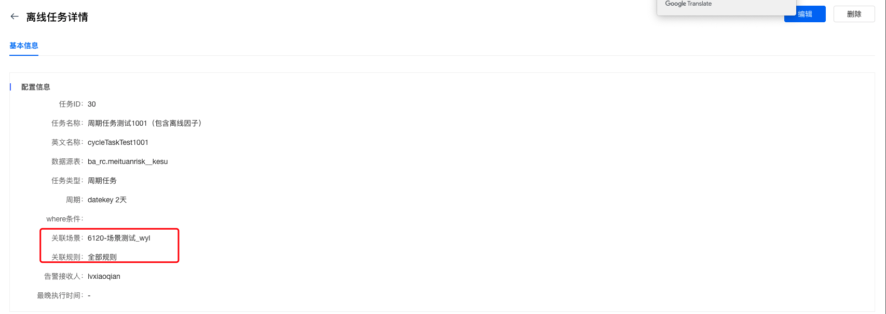 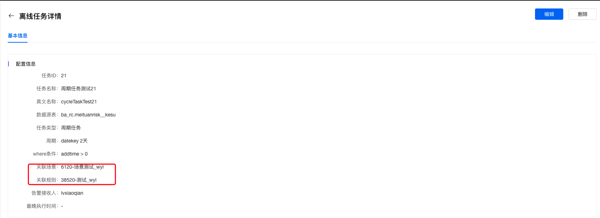 |
|||||||||
|
新建离线任务 点击离线任务详情页右上角的新建任务按钮，跳转至添加离线任务页面
|
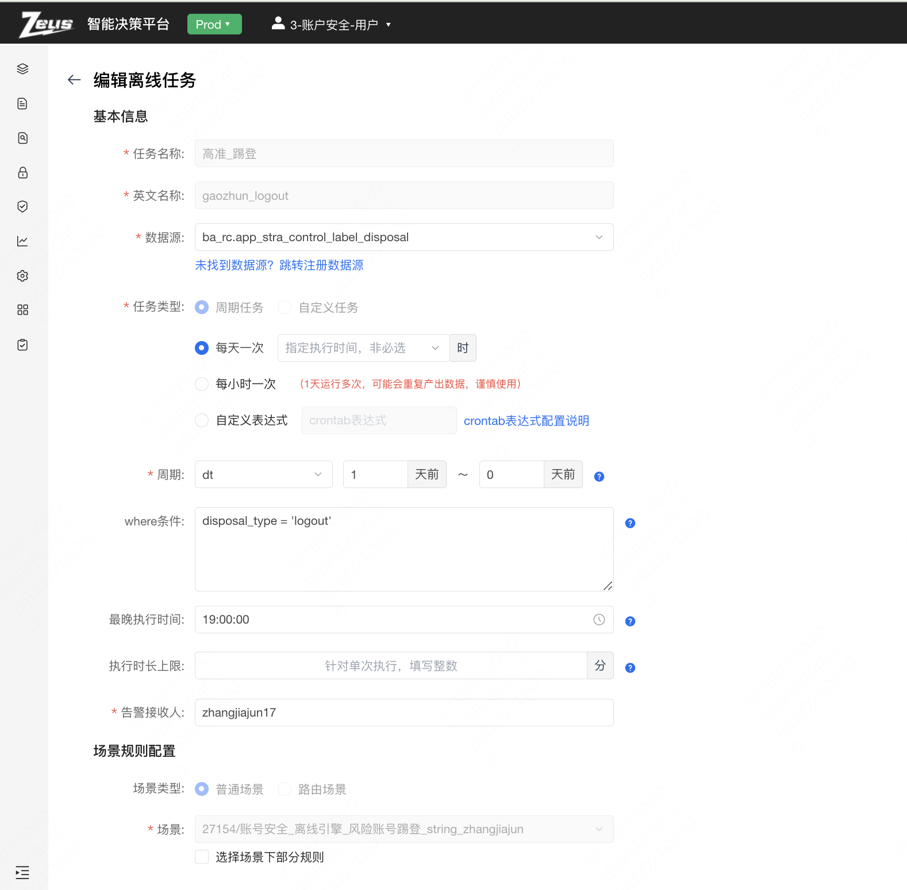 |
||||||||||
|
修改离线任务 针对周期任务，支持对离线任务进行修改，仅支持修改离线数据源字段、告警接收人、场景下的规则增删、周期字段和where条件。 说明：周期任务当日修改后，第二天的调度才会以新的配置进行执行，因为当日的调度任务已经生成； |
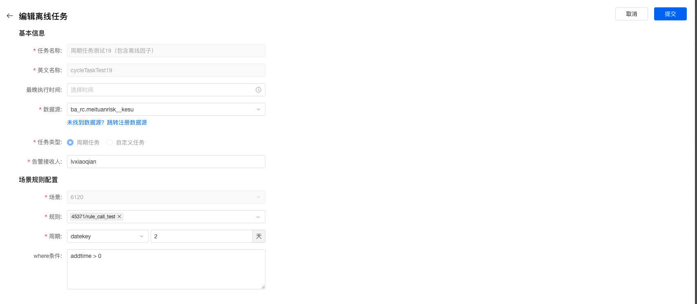 |
||||||||||
|
删除离线任务
|
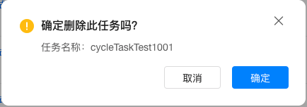 |
||||||||||
|
调度详情 |
调度详情页 查询区：
列表区：
|
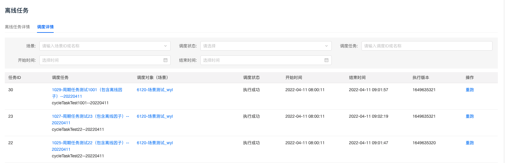 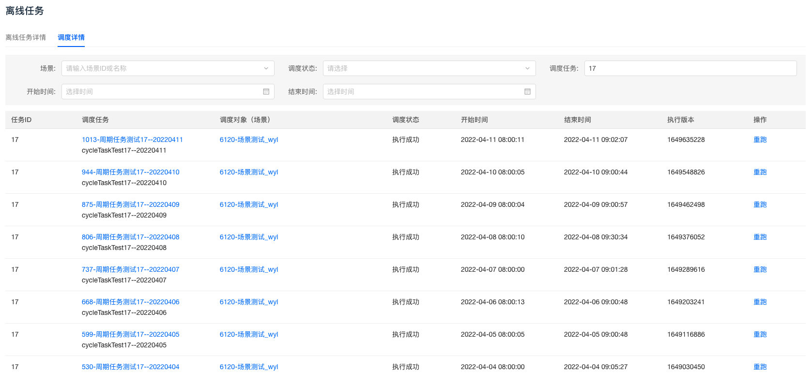 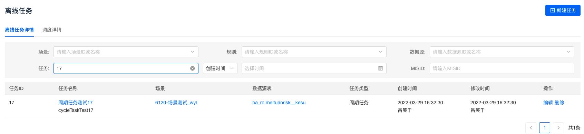 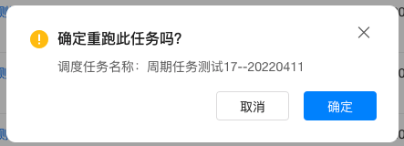 |
|||||||||
|
调度详情页 点击列表页的调度任务名称，跳转调度任务详情 基本信息：展示离线任务的基本配置信息，即使离线任务删除或者被修改过，此处也会记录当时调度时的配置； 任务信息： 展示该任务实际执行的规则 规则id： 规则名称：支持超链接至规则详情 调用量：即该次调度任务实际有多少流量请求了该条规则； 命中量：即该次调度任务实际有多少流量命中了该条规则； 操作：查看按天聚合结果，点击跳出弹框展示按天聚合的情况 |
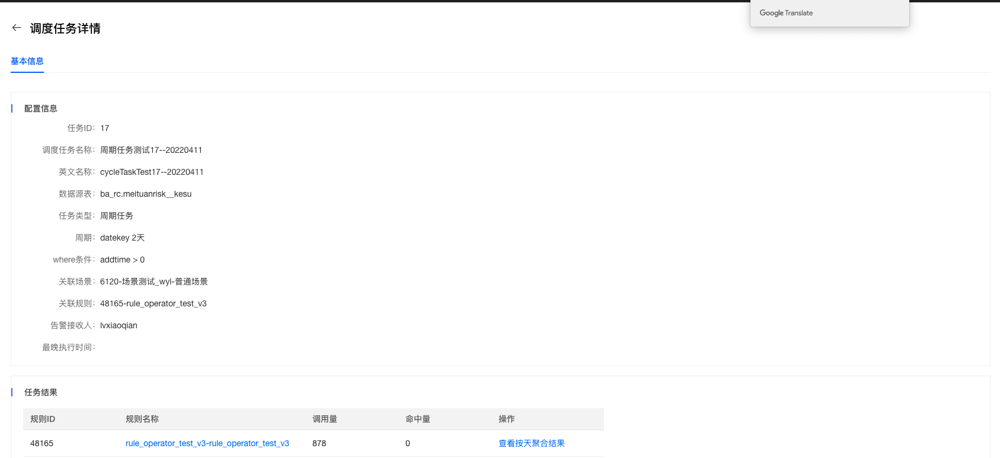 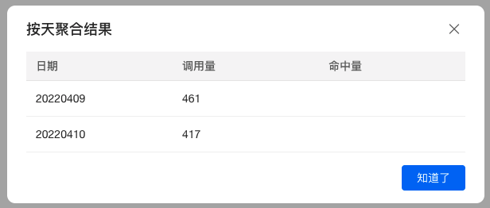 |
||||||||||
|
大象告警通知 |
每日执行情况统计通知 |
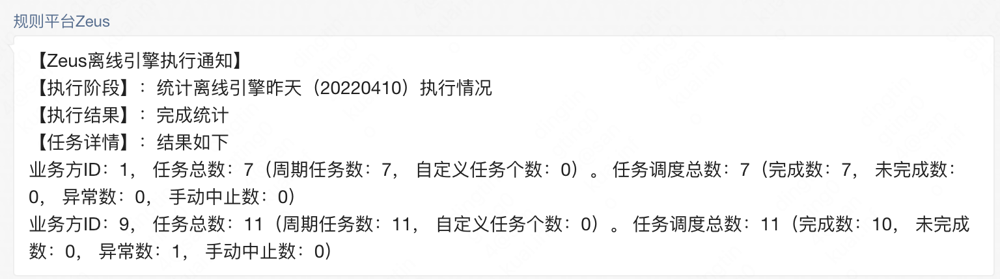 |
|||||||||
|
执行失败通知 |
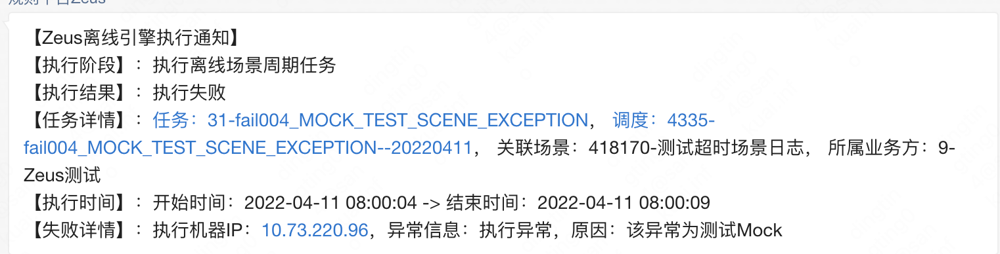 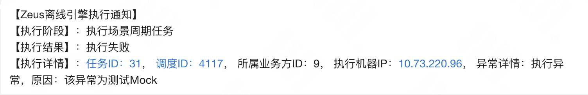 |
||||||||||
|
到达最晚执行时间执行通知 |
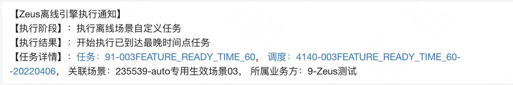 |
||||||||||
|
执行时间过长任务通知 |
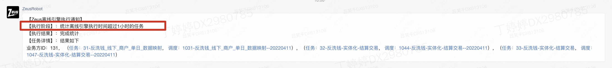 |
Step3:创建因子
累计因子、决策表因子等离线引擎无法使用
特殊说明：个体因子、全局因子
作用：全局因子--宏观统计指标，比如：到综商户的平均订单金额；个体因子--聚合统计指标，比如：到综单商户的平均订单金额
|
操作说明 |
示图 |
|---|---|
|
【入口】策略部署-因子 |
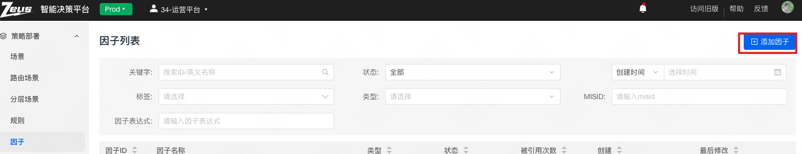 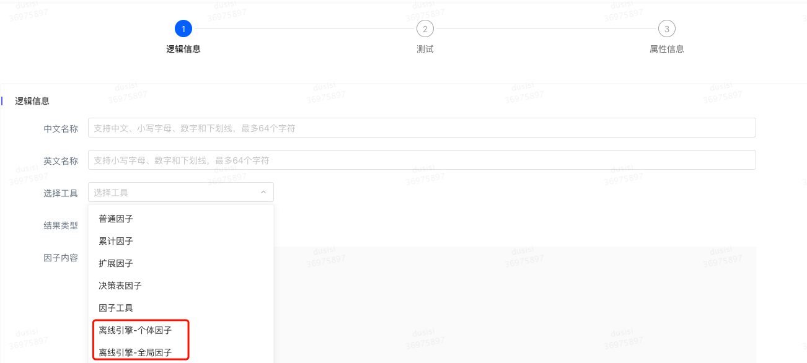 |
|
【个体因子】
|
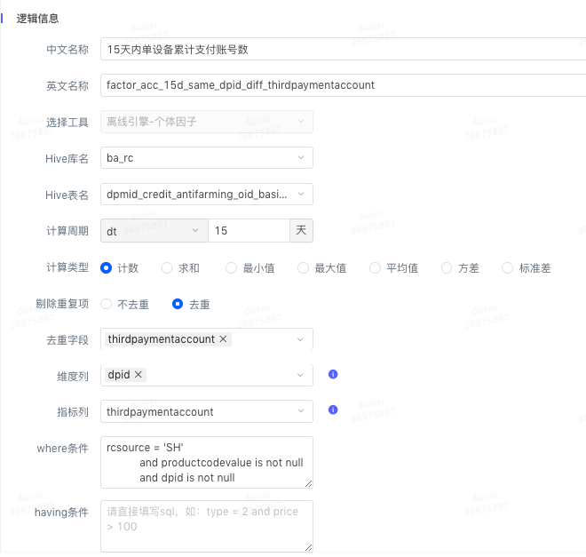 |
|
【全局因子】
|
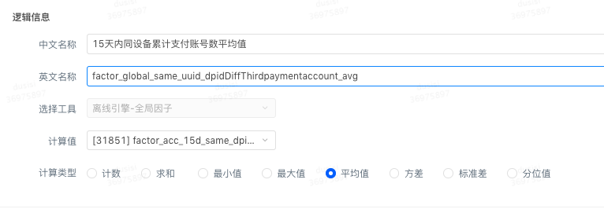 |
Step3:创建规则、决策、场景和场景配置
参考实时引擎配置方式即可说明：创建/修改规则
Step5:输出字段配置以及数据验证
|
操作说明 |
示图 |
|---|---|
|
【输出报表管理】 ⚠️当前尚未实现规则执行后的结果自定义输出，目前为统一的Zeus.log数据，需要业务根据自己期望提供给下游的目标格式，进行XT配置清洗。预计6月底完成自定义输出配置及同名单库、运营平台的打通 Zeus.log数据表：log.rc_zeus_request_business_122（只包含命中数据） 账户安全数据表：ba_rc.zeus_offline_result_to_tt_v3 |
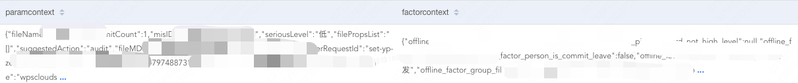 |
|
【输出决策管理】 当前只有「tuya处罚」可触达到tuya处罚中心，实时执行处罚；其他决策只输出表，如有新增决策需要执行，需研发配置开发；说明：离线引擎tuya决策使用 |
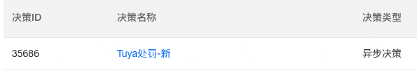 |
Step6:调度运行
1.完成上述Step1至Step5的配置，T+1你会收到调度完成消息（暂时不能当天执行验证，后续陆续开放）
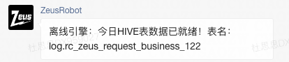
2.当运行出现异常时，可在调度管理中查看异常情况并进行重试
|
操作说明 |
示图 |
|---|---|
|
【调度管理】 入口：Plus+工具中心-->离线调度 （1）对于当天执行异常的任务可以进行重跑操作 “场景因子异常”若是提示该异常信息，表明因因子计算异常，导致场景执行结果异常。点击重试，会从因子计算开始一直到场景执行都重跑； “执行异常”若是提示该信息，表明当前状态下的内容执行异常，比如场景执行异常，点击重试，只会从场景执行重跑； （2）执行版本：为防止用户在日志查询时无法定位重跑数据，进行数据分析，在执行时会记录版本号。若出现重跑可根据版本号锁定相关日志信息 |
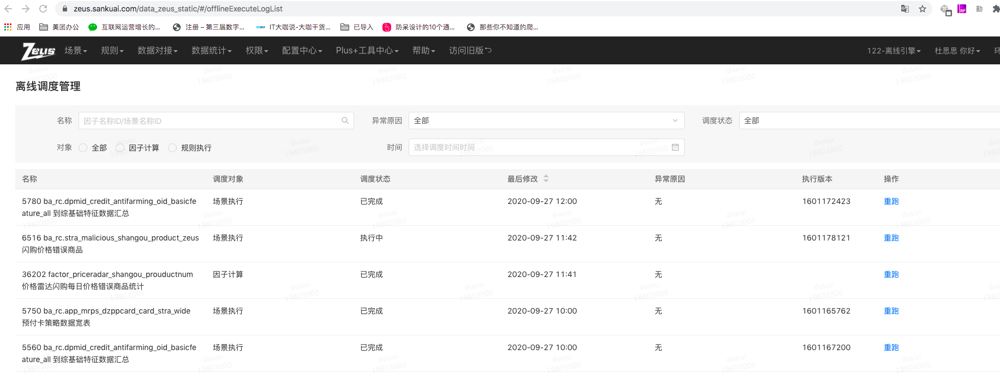 |
三、名次解释
数据管理：在zeus上注册并管理离线hive表，包括查看、配置字段依赖映射等
离线任务：离线任务和调度的查看与管理， 包括重跑离线任务
调度任务：针对配置的离线任务，展示每次的调度情况
四、FAQ
Q1:离线引擎处理数据的时效性
A：上游etl数据就绪后，开始离线引擎调度，抽取指定周期的数据；最小粒度可到小时
Q2:可以多张hive表映射至同一个场景么？
A：可以的，需要在离线映射中创建多个映射，即hive表与场景间是多对多的状态
Q3:离线引擎可以调用外部数据么？
A：除个体因子和全局因子外，其他类型的因子和参数都可以支持通过数据接口获取外部数据
Q4:类似于这种SQL在离线引擎上怎样配置？
A：（1）取数据逻辑，SQL代码如下，短期：建议使用数据接口方式实现以下取数逻辑。长期：规则平台考虑通用便捷的获取数据配置方式
select userid from mart_creid.dpadm_credit_userif_black_dd where hp_statdate=today and user_role=1（2）求最大、最小、均值等逻辑，SQL代码如下，使用个体因子
select userid,
avg(amount)
from ba_rc.dpmid_credit_antifarming_oid_basicfeature_all
where dt between '$now.delta(days=15).datekey' and '$now.datekey'
group by userid（3）求整体统计指标，比如：SQL代码如下，先建立个体因子，再建立全局因子
select avg(a.order_cnt)
from (
select userid,
count(distinct orderid) order_cnt
from ba_rc.dpmid_credit_antifarming_oid_basicfeature_all
where dt between '$now.delta(days=15).datekey' and '$now.datekey'
group by userid
) a（4）表与表之间的join如何实现？比如：SQL代码如下， 本期暂时无法实现，规划3期完成（2020Q3）
Q5:现在已经有哪些库表的权限了？
A：目前已经完成了mart_hotelmining、mart_credit、ba_rc三个库的数据权限申请，但还需要联系郎周皓将dsn、库名、表名、所需字段注册到zeus上
Q6:离线策略现在在ETL中，若迁移至离线引擎上怎么做迁移后的数据验证
A：（1）梳理离线ETL数据以及策略结构，建议一个ETL对应一条规则
（2）使用个体因子、全局因子以及其他因子进行特征逻辑配置和规则配置
（3）配置过规则的hive同场景的离线映射
（4）启动离线任务获得运行结果
（5）运行结果比对，比对参考方案建议如下，获得两边的结果数据比对数据量和关键参数、因子结果即可
⚠️如发现数据问题可大象zeus/it_rc_zeus
以下模块是批量了历史两个ETL，迁移至离线引擎后同一个场景下的两个规则，结果数据是否一致
【引擎产生结果数据表】
select get_json_object(paramcontext,'$.oid') oid,/*取关键参数*/
get_json_object(factorcontext,'$.factor_acc_15d_same_dpid_diff_thirdpaymentaccount') diff_pay_count,/*取关键因子*/
if( hitrules like '%33401%',1,null) rule_33401,/*取命中规则33401的数据*/
if( hitrules like '%33894%',1,null) rule_33894/*取命中规则33894的数据*/
from log.rc_zeus_request_business_122/*离线引擎产出的结果日志表*/
where dt = 20200427
and sceneid=5498/*规则执行对应的场景*/
---------------------------------------------------------------------------------------------------------------------------------------------------
【ETL原始表】
select oid,/*取关键参数*/
33401 as rule/*赋值标签，表明该表中的数据同命中33401规则数据逻辑一致*/
from ba_rc.dpmid_credit_antifarming_identicaldpid where dt='20200426'/*ETL结果数据产出表1*/
union all
select oid,
33894 as rule from /*赋值标签，表明该表中的数据同命中33894规则数据逻辑一致*/
ba_rc.dpmid_credit_antifarming_identicalPaymentAccount where dt='20200426'/*ETL结果数据产出表2*/Q7:离线策略支持标记、双跑、回溯等用于逻辑验证的手段么？
A：支持标记和回溯，暂不支持双跑
Q8:离线策略支持规则组、决策附加信息、多级路由、因子工具和排查探针等策略管理和部署的工具么？
A：支持
Q9:怎么给hive表申请权限
A：详情见：说明：Talos账号申请hive表权限的步骤
Q10 :离线策略执行结果如何查询？
A：两种方式
（1）近15天的执行结果数据在Zeus数据统计-->日志查询（离线任务）中查询实时命中情况，见下图；
（2）通过hive表查询，hive表可查询时间是您收到离线引擎任务完成通知后即可查询
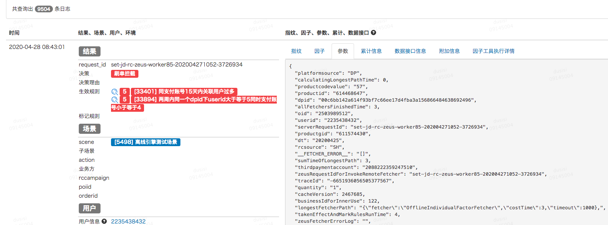
Q11:我的业务方下怎么没有离线策略部署的功能？
A：目前已经全部开放，没有单独的离线引擎功能，在因子、场景支持离线数据和逻辑的执行。
Q12:我的离线任务配置的tuya处罚决策执行完了，为什么tuya查不到处罚记录？
A：执行处罚的任务每5分钟扫描一次，最大延迟10分钟，可稍等10分钟再验证
B：请确认是否在tuya上配置了前置过滤规则，如果命中过滤规则，则不会进行处罚